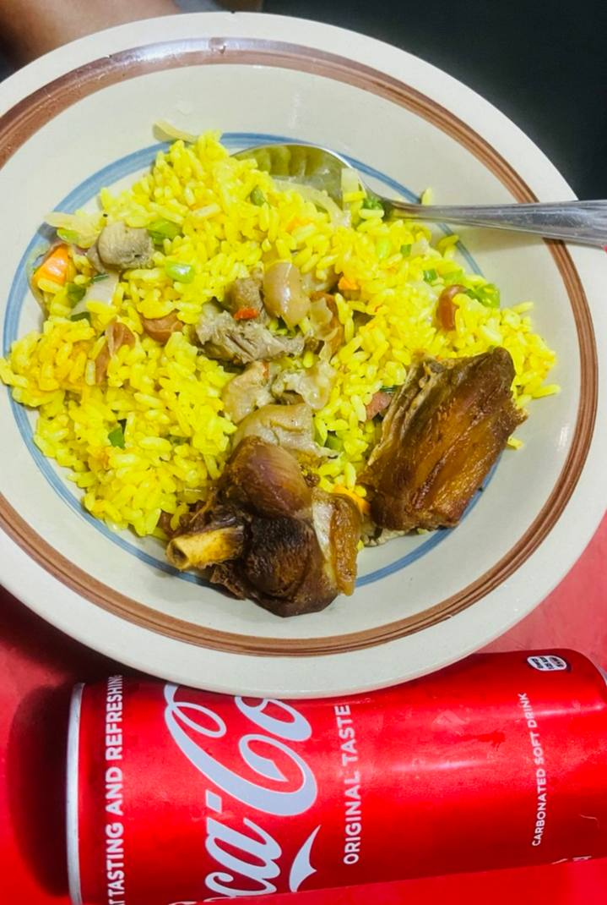

Instructions
Preparation
Fried rice is easy to make, the real work is in preparing all the sides and addditions that go into the meal.
- Cut your carrots, spring onions, bell peppers, runner beans, and other veggies into your preferred
bite-sized shapes. Try making your carrots, bell peppers and tomatoes into slim slices, or into small
cubes, however you prefer.
- You can prepare your protein using any desired method but make sure to keep the broth, e.g. you may
choose to boil your chicken, or fry it. If you are using side protein as well (e.g. boiled liver, or
fried beef pieces), prepare it and keep the broth. I would recommend seasoning your chicken with:
- one finely diced onion
- 2-3 diced peppers
- ½ tbsp thyme
- ½ tbsp curry powder
- 1 bouillon cube
- Salt & *black pepper to taste.
Cooking
With the bulk of the work out of the way, let's get to actually preparing the dish.
- Parboil and wash your rice.
- Add the broth to the rice (ideally it should not cover the rice so it doesn't get too soft, but this
depends on the texture of the rice after parboiling and washing). Add 1 tbsp curry powder, *½
tbsp turmeric powder or grated turmeric, one bouillon cube and salt to taste. Let it cook for 10-15
minutes on medium heat, or until the water is almost dried up.
From this point onwards, the food will be made in batches. It takes 4-6 batches to finish the amount of food
prepared. You will also need to work quickly.
- In a large pan, add 2tbsp oil and heat it on medium heat for a minute.
- Starting with the toughest veggies and working down (i.e. in this order: carrots, runner beans, bell
peppers, peas, onions, spring onions, sweetcorn, etc), add a portion to the oil and stir for 45-60
seconds each. Bring down the heat to low and add the sausages & side protein(s) last, if any.
- Taste the rice, if it needs more salt, you can add salt and black pepper powder to the mix in the pan.
- Add a portion of the rice to the pan, add the tomato slices if any, and carefully mix the ingredients.
- Keep repeating steps 3-6 until the rice and all other ingredients are finished.
Tips
Your fried rice is ready! Here's some more info to help you deliver the best fried rice:
- It helps a lot to get a headstart on preparing your ingredients.
- Fried rice pairs well with sides like sausages, plantain, grilled or fried meat.
- Work quickly to prevent the rice from burning.
- Ensure appropriate temperature regulation so that your ingredients are colorful and edible, not burnt.
Your final dish might look like mine:

A serving suggestion for the finished dish.
This recipe has evolved and improved a lot since I first saw this version in 2017. I have made many
spin-offs of it as well, including egg fried rice and shrimp fried rice.